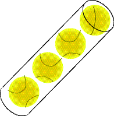
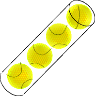

Charakteristische Merkmale von Objekten
Der erste Punkt in der Liste ist zu restriktiv.
Sie können sich z. B. Ihr Bankkonto als ein Objekt vorstellen, aber es besteht aus keinem Material
(obwohl Sie und die Bank Material benutzen mögen, um Ihre Kontobewegungen aufzuzeichnen, existiert das Konto unabhängig von diesem Material).
Obwohl es nicht materiell ist, besitzt Ihr Konto Eigenschaften (Kontostand, Zinssatz, Besitzer), Sie können Dinge mit ihm tun (Geld einzahlen, Überweisungen stornieren) und, es kann Dinge tun (Buchungen belasten, Zinsen gutschreiben).
Die letzten drei Punkte auf der Liste scheinen klar genug zu sein.
Sie haben in der Tat Namen:
- Ein Objekt besitzt eine Identität (es ist ein einzelnes Ganzes).
- Ein Objekt besitzt einen Zustand (es besitzt verschiedene Eigenschaften, die sich ändern können).
- Ein Objekt besitzt ein Verhalten (es kann Dinge tun und Dinge können etwas mit ihm tun).
Das ist eine etwas umgangssprachliche Beschreibung von dem, was ein Objekt ist.
Seien Sie nicht überrascht, wenn Sie in anderen Aufzeichnungen oder Büchern eine andere Liste sehen.
Wenn Sie damit beginnen objektorientierte Software zu schreiben werden Sie herausfinden, dass es schwierig ist exakt festzustellen, welches Ihre Objekte sind.
 
